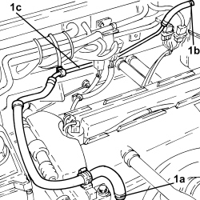

1088D43 COOLANT PIPE FROM CYLINDER HEAD R R
- Path
- Procedures > 10 ENGINE > 1088 ENGINE COOLING > 1088D COOLANT PIPES AND HOSES > 1088D43 COOLANT PIPE FROM CYLINDER HEAD R R
- Kind
- repair procedure (removal / refitting; the operation number is the code)
- Applies to
- engines: 1.9 JTS, 2.2 JTS; all production periods
- Interactive page
- https://sloeber94.github.io/elrnDB/alfa/159/en/#/939010687
Applies to: engines: 1.9 JTS, 2.2 JTS; all production periods
 Removing
Removing
 Refitting
Refitting